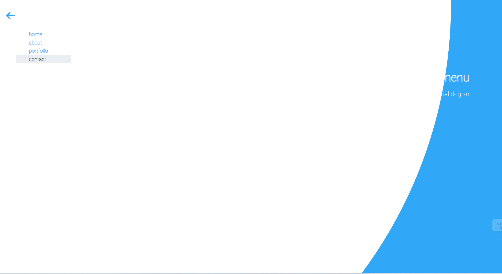

[x] [Bài 1]: bài làm tốt
Khi thẻ <input >được :checked thì Hiệu ứng .hambuger2 chưa full view port.

Sớm nhất
[x] Bài 1:
Bài làm rất tốt. *
[x] Bài 2:
Bài làm rất tốt. *
[x] Bài3:
Bài làm rất tốt. *
Hiệu ứng mở thư giống bản mẫu khoảng 90% vì ở bản mẫu khi hover vào thư thì cảm giác như lật ra lật vào nhưng hiện tại bài làm chỉ đang cho một khối tam giác lên xuống nên cảm giác không mượt như bản mẫu.
[x] Bài 1:
Bài làm rất tốt. *
Các tiêu đề ở menu nên tuân thủ bản mẫu là không viết hoa chữ cái đầu tiên, có thể sử dụng thuộc tính text-transform: lowercase;
[x] Bài 2:
Bài làm rất tốt. *
[x] Bài3:
Bài làm rất tốt. *
[x] Bài 1:
Bài làm rất tốt. *
[x] Bài 2:
Bài làm rất tốt. *
[x] Bài3:
Bài làm rất tốt. *
Tuy nhiên hiệu ứng mở thư vẫn hơi giật.
[x] [Bài 1]: Bài làm rất tốt *
Không lên để thẻ <ul> có kích thước bằng view port vì nếu người dùng muốn tạo ra overlay để nhấn ra ngoài.
[x] [Bài 3]: Bài làm rất tốt *
Khi :hover vào cạnh trên của lá thư có hiện tượng giật.
Đề Xuất.
Tạo Thêm thẻ <div class= "container"> bọc thẻ <div class= "envelope"> và cho :hover vào container.
.container {
width: 300px;
height: 250px;
}
[x] [Bài 2]: Bài làm rất tốt *
Lên để Thời gian chạy Hiệu ứng nhanh hơn tầm 0.25s để tăng trải nghiệm người dùng.
[x] [Bài 1]: Bài làm tốt *
Khi thẻ <input id = "burger">được :checked thì Hiệu ứng .burger-container không giống với bản mẫu.
[x] [Bài 2]: Bài làm rất tốt *
Lên để Thời gian chạy Hiệu ứng nhanh hơn tầm 0.25s để tăng trải nghiệm người dùng.
Thẻ <p>và Thẻ <h2> màu Hơi Mờ hơn so với bản mẫu.
[x] [Bài 1]: Bài làm tốt.
Khi thẻ <input >được :checked thì Hiệu ứng .backgorund chưa full view port.

[x] [Bài 2]: Bài làm tốt *.
Hiệu ứng gần giống với bản mẫu.
[x] [Bài 3]: Bài làm rất tốt *
Lên để Thời gian chạy Hiệu ứng nhanh hơn khoảng 0.25s để tăng trải nghiệm người dùng.
[x] [Bài 1]: Bài làm tốt.
Phần nav-bar khi active vào thẻ <li> thì background-color chuyển màu cứ không là :hover.
Khi phóng to màn hình navbar, phần background trắng chưa phải hình tròn.
[x] [Bài 2]: Bài làm tốt *.
Thêm trasition-delay: 0.25s khi input được :check để hiệu ứng giống bản mẫu.
[x] [Bài 3]: Bài làm tốt
Phần Hiệu ứng gần giống với bản mẫu.
Nên Để .letter có trasition-delay: 0.5s vì khi mở hộp thư thì lá thư mới được đẩy ra.
[x] [Bài 1]:
Khi phóng to màn hình navbar, phần background trắng chưa phải hình tròn.
Chưa Có hiệu ứng khi active vào thẻ <li>đổi background-color.
[x] [Bài 2]: Bài làm tốt .
Phần Hiệu ứng gần giống với bản mẫu.
[x] [Bài 3]:
Chưa Có Hiệu ứng hộp thư được mở ra.
Khi chưa :hover .letter-container 1 phần lá thư vẫn được hiển thị.
[x] [Bài 2]: Bài làm rất tốt *.
Thẻ .blog__article cho transform: rotate(-90deg) để giống với bản mẫu.
[x] [Bài 1]: bài làm tốt
Khi thẻ <input >được :checked thì Hiệu ứng .hambuger2 chưa full view port.
[x] [Bài 2]: Bài làm rất tốt *.
Phần Hiệu ứng gần giống với bản mẫu.
[x] [Bài 1]: bài làm tốt
Chưa Có hiệu ứng khi active vào thẻ <li>đổi background-color.
[x] [Bài 3]: Bài làm tốt
Sai Hiệu ứng của lá thư.